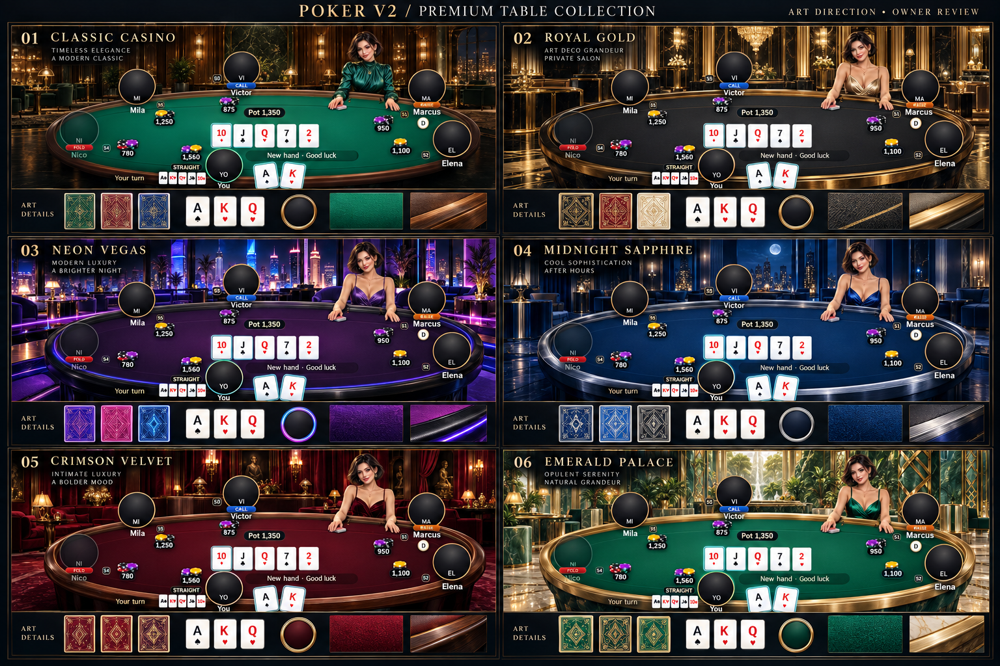
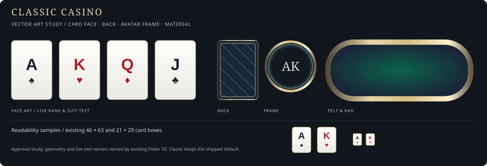
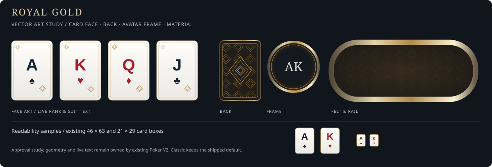
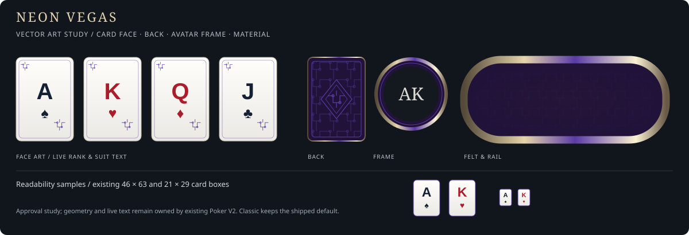
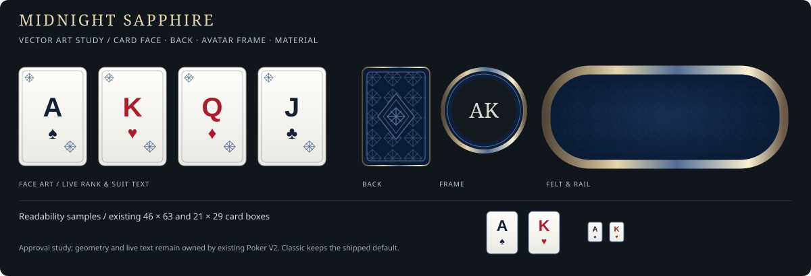
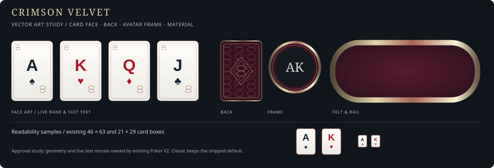
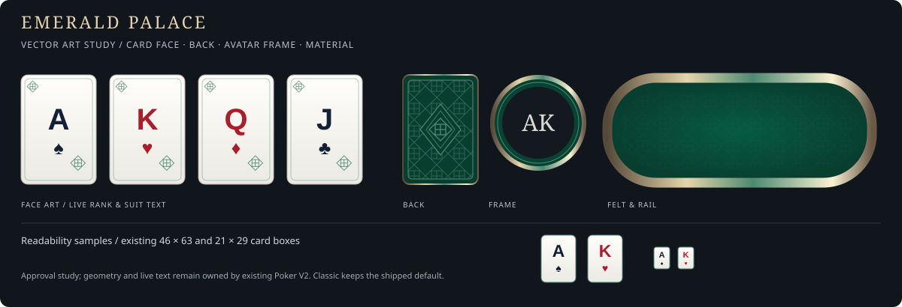
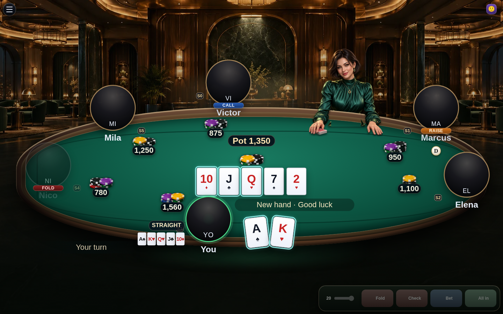
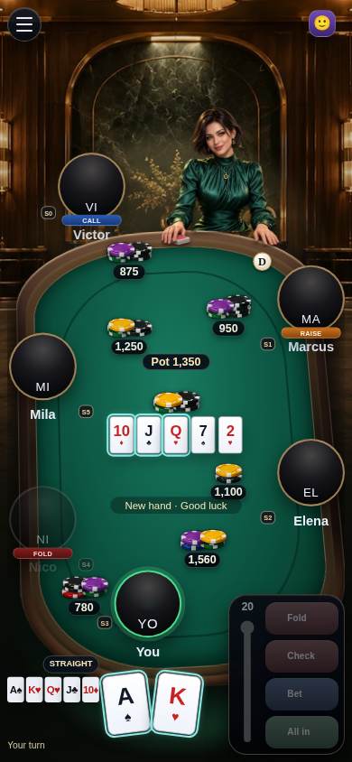

Wnętrze
Ciepłe drewno i ciemny zielony kamień; obecna architektura wnętrza.
Pełna kolekcja premium: wnętrze, światło, materiały stołu, karty, ramki i garderoba krupierki. Projekty wizualne do akceptacji przed implementacją.
Draft · oczekuje na akceptacjęPlansza koncepcyjna pokazuje sześć kompletnych kierunków. Kliknij, aby otworzyć obraz w pełnej rozdzielczości.

Ciepły orzech. Butelkowa zieleń. Prywatny salon.
Zachowujemy dzisiejszy pokój, oświetlenie i obecną krupierkę. To punkt odniesienia dla całej kolekcji.

Próbki materiałowe są szkicem kierunku; finalne ornamenty i warstwy zostaną wyeksportowane po akceptacji.
Ciepłe drewno i ciemny zielony kamień; obecna architektura wnętrza.
Miodowe kinkiety, miękkie cienie i światło na środku stołu.
Obecny orzechowy rail i zielony filc; bez zmiany proporcji.
Obecne jasne awersy z czarnymi/czerwonymi wartościami oraz klasyczny granatowy wzór rewersu.
Obecna złota rama, zachowane wskazanie aktywnego gracza.
Obecna szmaragdowa sukienka i fryzura. Domyślna grafika pozostaje bez zmian.
Szampańskie złoto w salonie z czarnego marmuru.
Elegancja prywatnego klubu: złoto skupia się na krawędziach i architekturze, a karty pozostają jasne.

Próbki materiałowe są szkicem kierunku; finalne ornamenty i warstwy zostaną wyeksportowane po akceptacji.
Czarny marmur, ryflowane kolumny, złote geometryczne podziały.
Ciepłe światło pośrednie; refleksy szampańskiego metalu bez oślepiającego blasku.
Ciemny tytoniowy filc, czarna skóra i szczotkowany metal.
Kość słoniowa, dyskretna rama awersu; geometryczna rozeta na ciemnym rewersie.
Szczotkowane złoto z cienkim motywem wachlarza; wyraźny turn ring.
Szampańska satynowa sukienka na cienkich ramiączkach, obecna twarz i zarejestrowane dłonie.
Cyjan i fiolet nad nocną panoramą miasta.
Neon jest częścią wnętrza. Powierzchnia gry pozostaje ciemna i spokojna, bez migotania i animowanych reklam.

Próbki materiałowe są szkicem kierunku; finalne ornamenty i warstwy zostaną wyeksportowane po akceptacji.
Luksusowy penthouse, abstrakcyjna nocna panorama, heban i przydymione szkło.
Architektoniczne pasy cyjanu i fioletu; statyczna poświata poza wartościami kart.
Śliwkowy filc, czarna skóra i cyjanowe obrzeże railu.
Chłodne jasne awersy; cienkie fioletowe ornamenty. Rewers: autorski geometryczny motyw neonowych torów.
Hebanowa rama z cyjanowym akcentem; zachowana czytelność aktywnego gracza.
Fioletowa satynowa sukienka na ramiączkach; opcjonalny chłodny refleks we włosach.
Granat, szafirowe szkło i szczotkowana platyna.
Najspokojniejszy nocny wariant: chłodna architektura, mało dekoracji, wysoka czytelność centrum stołu.

Próbki materiałowe są szkicem kierunku; finalne ornamenty i warstwy zostaną wyeksportowane po akceptacji.
Szafirowe szklane panele, ciemny kamień i platynowe detale.
Miękkie chłodne światło księżycowe i delikatne punktowe światło na filcu.
Głęboki granatowy filc, ciemna skóra, srebrne obrzeże.
Porcelanowe jasne awersy; rewers z promienistą szafirową rozetą i platynową linią.
Platynowa obręcz z subtelnym szlifem szafiru, bez zmiany rozmiaru portretu.
Głęboka szafirowa satynowa sukienka na cienkich ramiączkach.
Burgundowy aksamit. Mosiądz. Kameralny salon.
Bogactwo materiałów zamiast nadmiaru ornamentów: miękki aksamit kontrastuje z jasnymi kartami i ciepłym metalem.

Próbki materiałowe są szkicem kierunku; finalne ornamenty i warstwy zostaną wyeksportowane po akceptacji.
Oxblood velvet, teatralne nisze i ciepłe mosiężne kinkiety.
Ciepłe światło boczne; subtelny, nieruchomy refleks na railu.
Burgundowy filc, orzechowe drewno i cienki mosiężny detal.
Ciepła kość słoniowa; czarne/czerwone wartości. Rewers z autorskim ornamentem tekstylnym.
Ciepły mosiądz z delikatnym wzorem; zachowane sygnały fold i turn.
Burgundowa aksamitna sukienka na ramiączkach i subtelna złota biżuteria.
Pałacowy jadeit i złota geometria.
Wyraźnie inny od Classic: zielony onyks, architektoniczna kratownica i luksusowy ogród zimowy.

Próbki materiałowe są szkicem kierunku; finalne ornamenty i warstwy zostaną wyeksportowane po akceptacji.
Jadeitowy onyks, geometryczny mosiądz i dyskretna roślinność atrium.
Szmaragdowe światło odbite od kamienia, ciepłe złote akcenty.
Jubilerski szmaragdowy filc, ciemny jadeit i szampańskie złoto.
Jasny perłowy awers; rewers z geometrycznym szlifem szmaragdu i złotą linią.
Obręcz z jadeitu i złota z subtelnym wzorem kratownicy.
Szmaragdowa satynowa sukienka na cienkich ramiączkach, delikatne jadeitowe dodatki.
Te zrzuty pochodzą z niezmodyfikowanego stołu w trybie demo. Pozycje i rozmiary miejsc, kart, HUD, akcji oraz krupierki są punktem odniesienia dla implementacji.


Na Deploy Preview wybór motywu pojawi się w istniejącym Table Settings → Diagnostics → Preview FX. Zmiana dotyczy tylko grafiki w bieżącej karcie; odświeżenie przywróci obecny Classic. Będzie dostępna również dla gościa i obserwatora.
Ta galeria jest projektem do akceptacji. Przełączanie motywów w grze, końcowe zoptymalizowane pliki graficzne oraz weryfikacja gry na żywo należą do następnego etapu.
spec.md · plan.md · tasks.md · Draft PR #1076